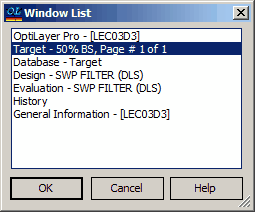

Windows List
Window List
Navigation: OptiLayer Menu Commands > View Menu > Window List |
` <idh_g eneral_information_window.html>`__ ` <idh_menu_view.html>`__ ` <idh_history.html>`__ |
The “Window List” command in the View menu allows you to view which OptiLayer windows are currently open and to bring any of them to the foreground. This feature is helpful when multiple windows are present on the screen. To activate any of the listed windows (i.e., bring it to the foreground), select it in the displayed list and click the OK button (you can also double-click a window name).

It is also convenient to use the Window menu** **for quick switching between different windows.